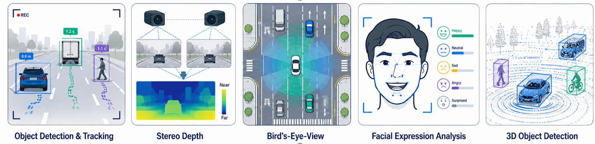
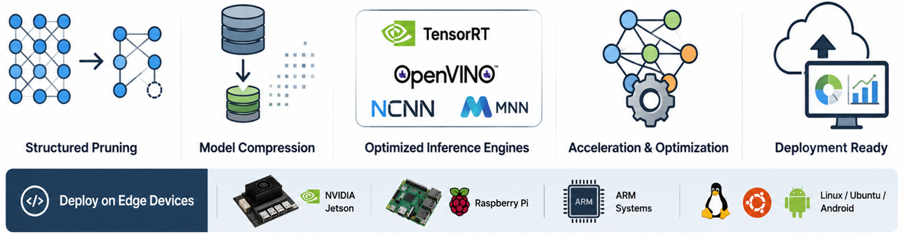
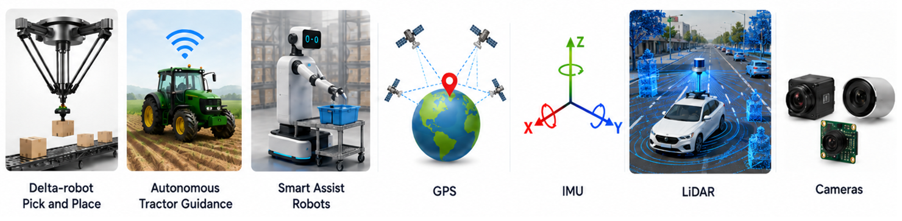
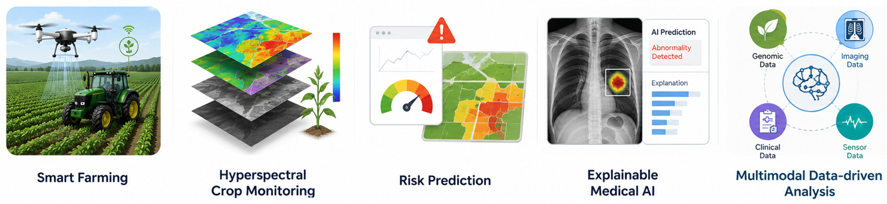

2D and 3D Perception
Object detection, tracking, stereo depth, bird's-eye-view perception, facial expression analysis, and traffic surveillance.

Rooted in Arghakhanchi, Nepal; advancing AI, vision, and autonomy
I am Deepak Ghimire, Ph.D., a senior research engineer working across 2D/3D perception, robotics, autonomous systems, ADAS, agriculture, sensor fusion, model optimization, and efficient AI deployment.
Research Identity
Object detection, tracking, stereo depth, bird's-eye-view perception, facial expression analysis, and traffic surveillance.

Structured pruning, model compression, TensorRT, OpenVINO, NCNN, MNN, and deployment on Jetson, Raspberry Pi, and ARM systems.

Perception systems for delta-robot pick and place, autonomous tractor guidance, smart assist robots, GPS, IMU, LiDAR, and cameras.

Smart farming, hyperspectral crop monitoring, risk prediction, explainable medical AI, and multimodal data-driven analysis.

Experience
Korea Electronics Technology Institute (KETI)
Lead AI and vision R&D for robotics, agriculture, surveillance, autonomous systems, and edge deployment.
Soongsil University
Developed efficient deep learning methods for edge computing; taught computer vision and deep learning; supervised graduate research.
BeEmotion.ai
Benchmarked deep learning models and contributed to in-car interior monitoring systems for driver and occupant behavior analysis.
Korea Electronics Technology Institute (KETI)
Built ADAS, driver monitoring, pedestrian and vehicle detection, stereo depth, and 3D perception systems for real-world clients.
Jeonbuk National University
Worked on face detection, recognition, facial emotion analysis, driver monitoring, color image enhancement, object detection, and tracking.
Simon Fraser University, Vision and Media Lab
Worked on facial expression analysis with geometric facial feature extraction and tracking techniques.
Lumbini Engineering College, Pokhara University
Taught programming, computer graphics, digital signal processing, and image processing with practical lab instruction.
Jeonbuk National University, Korea. CGPA: 97.2/100.
Thesis Recognition of Facial Expressions Based on Salient Texture and Geometric FeaturesJeonbuk National University, Korea. CGPA: 96.5/100.
Thesis A Robust Face Detection Method Based on Skin Color and EdgesLumbini Engineering College, Pokhara University, Nepal. Undergraduate tuition waiver awarded to the top-performing student.
Public Profiles
Contact
For research collaboration, invited talks, academic service, consulting, or project discussion, send a short message here.
Available for consulting projects via Upwork Computer vision, AI/ML, edge deployment, model optimization, and applied perception systems.Origin
My journey begins in Gairagoth, Dhikura, a small local settlement in the hilly region of Arghakhanchi, Lumbini Province, Nepal.
That origin continues through research, engineering, and collaboration across AI, computer vision, robotics, and autonomous systems.